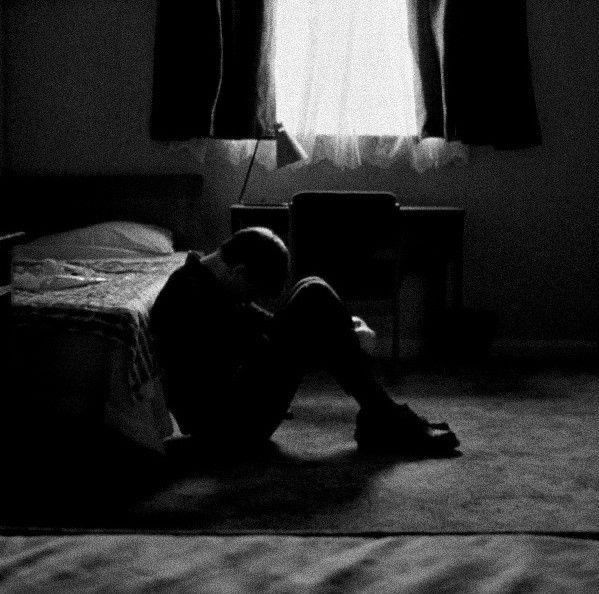
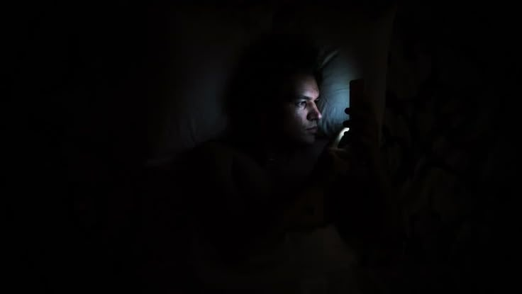
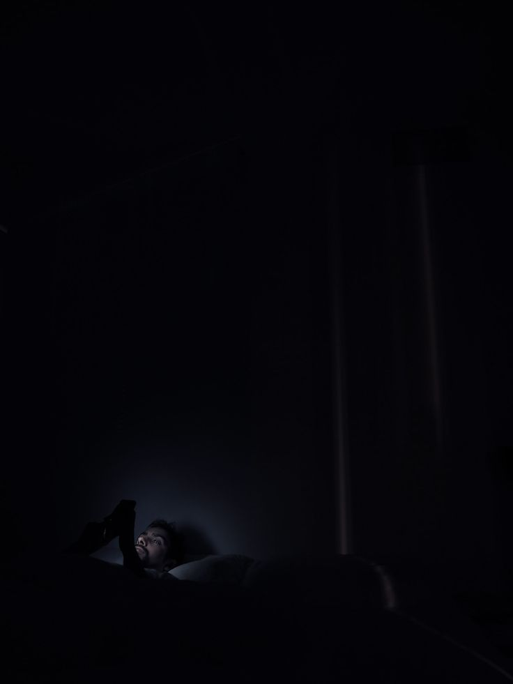

الحقيقة المطلقة: القرار بيديك أنت
عزيمة التغيير والقرار النهائي لن يمنحك إياها أحد.. هي قرارك الشخصي بينك وبين نفسك أمام الله. المواقع والنصائح هي مجرد أسباب، لكن المفتاح الحقيقي بيديك أنت فقط.

منصة تُعنى بصيانة النفس وتحرير الشباب من إدمان الإباحية بعون الله في زمن صار فيه الحرام سهلا

من واقع تجربة وممارسة حقيقية: السبب الأساسي والعميق للوقوع في إدمان الإباحية والضعف المتكرر أمام الشهوات هو **الهجر الطويل لكلام الله تعالى** قراءةً وتدبرًا.
إن القلب إذا خلا من كلام الله والتعلق به، أصبح أرضًا قاحلة وسهلة الاقتحام أمام الوساوس والنظرات المحرمة. القرآن ليس مجرد عبادة تؤجر عليها، بل هو إعادة تشكيل حقيقية لبنية العقل والروح.


إذا كنت تشعر الآن برغبة ملحة أو تباغتك أفكار الضعف، نفّذ هذه الخطوات الفورية بدون تردد:
المتعة الزائفة تدوم لدقائق معدودة، لكن الشعور بالذنب والكسر يستمر لعدة أيام. صُنْ نفسك وكن أنت المنتصر اليوم!
صناعة الإباحية ليست مجرد محتوى عشوائي، بل هي تجارة بمليارات الدولارات تعتمد على تدمير مراكز الإرادة في عقول الشباب وتسهيل انقيادهم وتشتيت طاقاتهم عن بناء أنفسهم وأممهم.

إن استمرار بقاء الفرد أمام الشاشات حتى ساعات متأخرة يفتح الباب للتصفح اللاشعوري والوقوع في المحرمات.



.jpg)



أهلاً بك في منصة صَـون. وجودك هنا اليوم هو دليل حي على أن ضميرك ما زال حياً، وأن في قلبك رغبة صادقة في التغيير والتحرر من الأغلال التي تكبلك.
اعلم أنك لست وحدك في هذه المعركة، وأن إدمان الإباحية ليس دليلاً على أنك شخص سيئ، بل هو فخ سلوكي ونفسي وقع فيه ملايين الشباب بسبب التسهيلات والتكنولوجيا الحديثة.
البداية تبدأ بقرار صريح وشفاف مع الذات. اترك الماضي خلفك، وابدأ رحلة جديدة ملؤها النور والكرامة والعزة وصيانة النفس.
الإباحية ليست مجرد نظرة محرمة، بل هي مادة سامة تؤثر مباشرة على البنية الدماغية والنفسية والاجتماعية للإنسان:
التعافي يتطلب خطوات عملية وتغييراً في نمط الحياة اليومية: